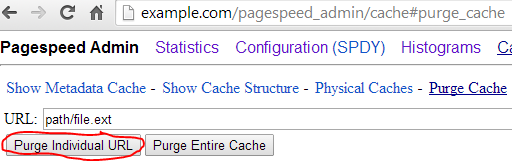

PageSpeed System Integration
Configuring Caching
PageSpeed requires publicly cacheable resources to provide maximum benefit. As discussed in the "Cache Extender" filter, the origin TTL specified in the server configuration file dictates how quickly changes made to the source can propagate to users' browser caches. However, using PageSpeed, resources referenced statically from HTML files will be served with a one-year cache lifetime, but with a URL that is versioned using a content hash.
Configuring Server-Side Cache for PageSpeed
In order to rewrite resources, PageSpeed must cache them server-side. A file-system based cache is always employed on each server. memcached or redis may be used as a scalable network-accessible cache in addition to the file cache. The file cache is always required, since PageSpeed has a few things it needs to store locally. Finally, a per-process in-memory LRU cache and/or an interprocess shared-memory cache can be configured for rapid access to small objects.
Configuring the File Cache
PageSpeed must be configured with a path where it can write cache files, tuned to limit the amount of disk space consumed. The file cache can be placed on a tmpfs partition or on a physical disk. The file cache has a built-in LRU mechanism to remove old files, targeting a certain total disk space usage, and a certain interval for the cleanup process. An example configuration is:
- Apache:
ModPagespeedFileCachePath "/var/cache/pagespeed/" ModPagespeedFileCacheSizeKb 102400 ModPagespeedFileCacheCleanIntervalMs 3600000 ModPagespeedFileCacheInodeLimit 500000
- Nginx:
pagespeed FileCachePath "/var/cache/pagespeed/"; pagespeed FileCacheSizeKb 102400; pagespeed FileCacheCleanIntervalMs 3600000; pagespeed FileCacheInodeLimit 500000;
It is important to note that FileCacheSizeKb and
FileCacheInodeLimit do not define absolute limits
on the cache size and inode count. The cache cleaning process will run at
the time interval defined by
FileCacheCleanIntervalMs, and will only initiate
cleaning if the cache size exceeds
FileCacheSizeKb or the cache inode count exceeds
FileCacheInodeLimit. When cache cleaning is
initiated, the oldest files in the cache will be removed until the cache
size is under 0.75 * FileCacheSizeKb and the
inode count is under 0.75 * FileCacheInodeLimit.
Warning: Because the file cache cleaner does not impose a tight bound on disk usage, if your site is large and receives heavy traffic PageSpeed's cache can expand to fill your entire disk. If this becomes a problem you must either use a sufficiently large disk that this can't happen, or a cache whose size is guaranteed to be bounded. Bounded caches include keeping your file cache on a PageSpeed-specific partition, memcached, and redis.
PageSpeed previously reserved another file-path for future use as a shared
database in a multi-server environment. This is no longer in the plan,
and GeneratedFilePrefix now generates a deprecation warning.
Starting in version 1.12.34.1, it is possible to disable cache cleaning
entirely, making PageSpeed ignore the limits set
by FileCacheSizeKb and FileCacheInodeLimit. To
do this, set FileCacheCleanIntervalMs to -1:
- Apache:
ModPagespeedFileCacheCleanIntervalMs -1
- Nginx:
pagespeed FileCacheCleanIntervalMs -1;
In versions before 1.12.34.1, using a large number for the interval, like
1576800000000 (fifty years), has the same effect.
Warning: Without cleaning the cache will grow without bound as PageSpeed continues to store additional resources. If you disable the built-in cache cleaner you must implement something yourself to ensure that PageSpeed does not consume all available disk space for its cache.
Configuring the in-memory LRU Cache
To optimize performance, a small in-memory write-through LRU cache can be
instantiated in each server process. Note that in Apache's pre-fork mode
this means dozens of processes, so the total memory consumed
(LRUCacheKbPerProcess * num_processes) must fit into the
capabilities of the host machine. Nginx typically runs with many fewer
processes, so a larger LRUCacheKbPerProcess is appropriate
there. The LRUCacheByteLimit is the limit on how large a
cache entry the LRU cache will accept. A sample configuration is:
- Apache:
ModPagespeedLRUCacheKbPerProcess 1024 ModPagespeedLRUCacheByteLimit 16384
- Nginx:
pagespeed LRUCacheKbPerProcess 8192; pagespeed LRUCacheByteLimit 16384;
Configuring the Shared Memory Metadata Cache
As part of its operation, PageSpeed stores summaries of how to apply optimizations to web pages as part of a metadata cache. Metadata entries are small and frequently accessed. They should ideally be stored in local memory and shared across server processes, as opposed to on disk or an external cache. That is exactly what the shared memory metadata cache does, and it is the best place to cache your metadata entries.
Prior to 1.12.34.1, writes to an explicitly configured shared memory metadata cache were in-memory only, and not written to disk. This provided a large performance boost but the contents of the cache were lost upon server restart.
As of 1.12.34.1, PageSpeed checkpoints the shared memory metadata cache to disk, providing almost all the performance but without the cache being wiped on restart. By default the metadata cache is checkpointed every 5 minutes, see shared memory checkpointing for more details.
In all versions, if you enable an external cache, cache entries are written through to it.
The shared memory metadata cache is enabled using
the CreateSharedMemoryMetadataCache directive. This directive
takes two arguments. The first is the exact string given as the argument
to FileCachePath in any virtual host where you want this cache
active. The second is the size of the cache in kilobytes. Unlike the LRU
cache, this cache is shared among all server processes, so far larger values
are possible. For example:
- Apache:
ModPagespeedCreateSharedMemoryMetadataCache "/var/cache/pagespeed/" 51200 <VirtualHost www.example.com:80> ModPagespeedFileCachePath "/var/cache/pagespeed/" </VirtualHost> <VirtualHost alt.example.com:80> ModPagespeedFileCachePath "/var/cache/pagespeed/" </VirtualHost>
- Nginx:
pagespeed CreateSharedMemoryMetadataCache "/var/cache/pagespeed/" 51200; server { listen 80; server_name www.example.com; pagespeed FileCachePath "/var/cache/pagespeed/"; } server { listen 80; server_name alt.example.com; pagespeed FileCachePath "/var/cache/pagespeed/"; }
If you are currently using a file cache, you can estimate a good size for
this cache by measuring the size of the rname/ directory of
the on-disk cache, using the du -s -h --apparent-size command,
for example:
du -s -h --apparent-size /path/to/pagespeed_cache/rnamethen, multiplying the result by 1.75 and converting it to kilobytes.
You can see how effective this layer of cache is at the global PageSpeed statistics page, where at the bottom of the page every shared memory cache will be listed, including in particular information on its hit rate and how full it is (blocks used).
Default Shared Memory Metadata Cache
Any virtual host that does not have a shared memory
metadata cache configured
with CreateSharedMemoryMetadataCache will share a default
one. In versions 1.12.34.1 and later, snapshots of the shared memory
cache are periodically saved to disk via shared memory checkpointing. Versions prior to 1.12.34.1 did not
support snapshotting, and instead wrote all changes through to disk,
significantly degrading the write performance of the shared memory cache.
You can configure the size of this cache
with DefaultSharedMemoryCacheKB, or disable it entirely by
setting the size to 0. The default size is 50MB, and is shared across all
server processes.
- Apache:
ModPagespeedDefaultSharedMemoryCacheKB 50000
- Nginx:
pagespeed DefaultSharedMemoryCacheKB 50000;
This directive can only be used at the top level of your configuration.
Shared Memory Metadata Cache Checkpointing
Note: New feature as of 1.12.34.1
Shared memory caches are fast but have the significant disadvantage that they do not survive a server restart. The file cache does persist across restarts but performs significantly worse than an in-memory cache. Checkpointing attempts to provide a balance by using the same fast in-memory cache and periodically writing its contents to disk. In practice this can perform almost as well as a straight memory cache, with the significant advantage that it also survives a server restart, as the checkpoint is read into memory at startup.
If you're using an external cache, all writes to the shared memory metadata cache are written out to the external cache so that other servers using the same external cache can avoid redundant optimization. In this configuration, the checkpoint is not written through to the external cache when it is restored, because this could overwrite the work of other servers.
Checkpointing is enabled by default, running every five minutes. You can
adjust this interval by
setting ShmMetadataCacheCheckpointIntervalSec, and you can
disable checkpointing entirely by setting it to -1.
- Apache:
ModPagespeedShmMetadataCacheCheckpointIntervalSec 300
- Nginx:
pagespeed ShmMetadataCacheCheckpointIntervalSec 300;
This directive can only be used at the top level of your configuration.
Note that if you disable checkpointing, the shared memory cache will not be written to disk, and all optimizations will be lost on server restart.
If you have multiple file caches enabled, PageSpeed has to pick one to use for snapshots for the default shared memory cache. It resolves this by taking the file cache path that comes first alphabetically and putting all snapshots there.
External Caches
PageSpeed supports two different external caches, memcached and redis. The main reasons to use an external cache are:
- You want to run multiple PageSpeed servers without duplicating optimizations.
- You want to allocate more memory to PageSpeed's cache than a single machine an provide.
You can configure different external caches for different virtual hosts, but you can't use both memcached and redis for the same virtual host.
Configuring memcached
To enable memcached, specify the list of memcached servers with a comma-separated list of hosts and ports. If the port is omitted, the default memcached port of 11211 is assumed. PageSpeed's memcached integration by uses a background thread for communicating with the memcached servers. This allows PageSpeed to batch multiple Get requests into a single MultiGet request to memcached, which improves performance and reduces network round trips.
- Apache:
ModPagespeedMemcachedServers "host1:port1,host2:port2,host3:port3"
- Nginx:
pagespeed MemcachedServers "host1:port1,host2:port2,host3:port3";
To start memcached with 1Gb of memory, use memcached -p PORT -m 1024
-u WEBSERVER_USERNAME. The default size of 64Mb might be too low
for large sites. See the
wiki for detailed memcached configuration help. Be aware that
configuring scalable caching requires tuning and iteration. You must be
sure that the user-id running the server has permission to access
memcached. For example, on CentOS, you may need to run memcached
with:
- Apache:
memcached -p PORT -m MEMORY_IN_MEGABYTES -u apache
- Nginx:
memcached -p PORT -m MEMORY_IN_MEGABYTES -u nginx
When you use memcached with PageSpeed, many vital memcached statistics can be found at
- Apache:
http://localhost/mod_pagespeed_statistics?memcached
- Nginx:
http://localhost/ngx_pagespeed_statistics?memcached
memcached_deletes: 0 memcached_hits: 81651 memcached_inserts: 161605 memcached_misses: 118782
...and also from the perspective of each memcached server, aggregating activity from each memcached client including all PageSpeed instances.
memcached server host1:6765 version 1.4.2 pid 1132 up 343306 seconds bytes: 923977753 bytes_read: 37710601552 bytes_written: 141519206300 cmd_get: 50273185 cmd_set: 11471631 connection_structures: 233 curr_connections: 16 curr_items: 255329 evictions: 5258751 get_hits: 50273185 get_misses: 14556369 limit_maxbytes: 1048576000 pointer_size: 64 rusage_system: 1065290000 rusage_user: 64 threads: 4 total_connections: 12235148 total_items: 11471631 memcached server host2:6765 version 1.4.2 pid 6568 up 343278 seconds bytes: 921246303 bytes_read: 12962377990 bytes_written: 57778312362 cmd_get: 21702123 cmd_set: 4166384 connection_structures: 49 curr_connections: 15 curr_items: 254144 evictions: 1329595 get_hits: 21702123 get_misses: 4923668 limit_maxbytes: 1048576000 pointer_size: 64 rusage_system: 594360000 rusage_user: 64 threads: 4 total_connections: 4840010 total_items: 4166384
By default, PageSpeed uses a half-second (500,000 microsecond) timeout for cache operations. If the timeout is exceeded more than 4 times in a 30 second span, PageSpeed assumes that memcached is not healthy and will stop optimizing resources for 30 seconds before trying again.
For wide area networks or for alternative implementations and proxies of
the memcache protocol such as couchbase or moxi-server it may be necessary
to increase the I/O timeout. Please monitor the statistic
'memcache_timeouts' to help tune the timeouts. Select a new timeout with
the MemcachedTimeoutUs directive:
- Apache:
ModPagespeedMemcachedTimeoutUs timeout_in_microseconds
- Nginx:
pagespeed MemcachedTimeoutUs timeout_in_microseconds;
For example, to increase the timeout to from half a second to a second, use:
- Apache:
ModPagespeedMemcachedTimeoutUs 1000000
- Nginx:
pagespeed MemcachedTimeoutUs 1000000;
Configuring Redis
Note: New feature as of 1.12.34.1
Warning: Redis support is experimental and has not yet had substantial real world use. Before rolling this out in production, be sure to test it well. If you run into problems, please let us know.
To enable redis, specify a single redis
server as host:port. The port is optional, and defaults to
6379. This host can either be a stand-alone redis server, or a master
node from a redis cluster. If the host is a cluster node, PageSpeed will
ask it for the cluster configuration and distribute its reads and writes
among the cluster nodes.
- Apache:
ModPagespeedRedisServer "host:port"
- Nginx:
pagespeed RedisServer "host:port";
You can configure how long PageSpeed is willing to wait for a response from Redis before timing out a request, which defaults to 50ms:
- Apache:
ModPagespeedRedisTimeoutUs timeout_in_microseconds
- Nginx:
pagespeed RedisTimeoutUs timeout_in_microseconds;
You can also configure how long PageSpeed will wait after an error from Redis before it tries connecting again, which defaults to 1s:
- Apache:
ModPagespeedRedisReconnectionDelayMs timeout_in_milliseconds
- Nginx:
pagespeed RedisReconnectionDelayMs timeout_in_milliseconds;
Flushing PageSpeed Server-Side Cache
When developing web pages with PageSpeed enabled, it is sometimes convenient to flush the cache of a running server, in order to get the system to reload CSS or JavaScript files that have been updated before the origin cache lifetime expires.
Legacy Flushing Of Entire Cache
By default, the system is configured to support only whole-cache
flushes — we'll call this legacy mode. As
of version 1.9.32.1, it can be configured to
also allow purging of individual URLs. The two modes operate
differently and you may choose between them for each virtual
host. Legacy mode is on by default, to provide compatibility
with existing scripts and other infrastructure that might have
been built around it. In a future release, individual URL
purging will become the default. Subsequent to that, the legacy
whole-cache flushing mode will be eliminated.
You can choose between the two modes with
the EnableCachePurge argument. If set to "on" you
will get the new behavior, with individual URL purging, while
"off" will give you the legacy behavior. The default is "off",
as if your configuration read:
- Apache:
ModPagespeedEnableCachePurge off
- Nginx:
pagespeed EnableCachePurge off;
In this mode, simply touch the file "cache.flush" in the directory
specified as FileCachePath above. For example:
sudo touch /var/cache/pagespeed/cache.flush
The system may take up to 5 seconds to take effect (changeable via option
CacheFlushPollIntervalSec described
below).
Purging individual cache entries or entire cache
Note: New feature as of 1.9.32.1
In this mode, the cache may be purged by sending HTTP requests to the server, using a configurable path. The cache can be purged via an HTTP GET, PURGE, or DELETE, once a handler has been configured. The admin site makes this easier by providing a graphical interface to initiate purge requests and see what entries have been purged.
To enable individual URL cache purging, you must configure the admin site, specify a PurgeMethod, or both. Plus you must turn on EnableCachePurge:
- Apache:
ModPagespeedEnableCachePurge on ModPagespeedPurgeMethod PURGE (optional)
- Nginx:
pagespeed EnableCachePurge on; pagespeed PurgeMethod PURGE; (optional)
This establishes three methods to purge the cache of a URL, or to purge the entire cache, assuming PageSpeed is running on example.com:
| Method | Purge single URL | Purge entire cache |
|---|---|---|
| HTTP GET | curl 'http://example.com/pagespeed_admin/cache?purge=path/file.ext' |
curl 'http://example.com/pagespeed_admin/cache?purge=*' |
| HTTP PURGE | curl --request PURGE 'http://www.example.com/path/file.ext' |
curl --request PURGE 'http://www.example.com/*' |
| Admin GUI |  |  |
The Purge requests for individual URLs made via the GUI are
executed via an HTTP GET. In either case, the URL being purged
is specified relative to the ORIGIN of the admin site. In these
examples, path/file.ext is combined
with example.com to purge the path
http://example.com/path/file.ext from the cache.
When the new mode of cache purging is enabled, the purges take place immediately, there is no five second delay. Note that it is possible to purge the entire cache, or to purge one URL at a time. It is not possible to purge by regular expression or wildcard. The URL purging system works by remembering which URLs are purged and validating each URL coming out of cache against them. There is a limitation to the number of distinct URLs that can be purged. When that limit is exceeded, everything in the cache older than the oldest remaining purge request will be dropped. The limitation is high enough that it's not expected to be exceeded often, but is not currently changeable.
Limitations
The following limitations apply to both method the legacy and new methods of cache purging.
Caution: In a multi-server system, you must run these commands on every server. All the cache data from VirtualHosts using that cache directory will be flushed. This is true even when using memcached: the cache flush information is kept locally on each machine running PageSpeed, not in the cache itself. This is because of the L1 caches that run locally on each machine, and because memcached does not guarantee persistance.
Caution: Flushing or purging the cache does not delete the old files from the directory, the memcached server, or PageSpeed's in-memory cache, but it tells PageSpeed to ignore those files.
Note: After flushing or purging the cache, the
stale files will eventually be replaced with fresh copies or
removed by the normal file cache cleaning process
(see FileCacheCleanIntervalMs above).
You can change the polling interval and name of the cache-flush
file in the configuration file. If you set the polling interval to 0, the
cache flushing feature will be disabled. If you specify the cache flush
filename as a relative path, PageSpeed will look for that file in
the FileCachePath directory. If you use an absolute path,
then the caches associated with multiple virtual hosts can be flushed all
at once.
Cache Flushing and Purging Options
- Apache:
ModPagespeedCacheFlushFilename alternate_filename ModPagespeedCacheFlushPollIntervalSec number_of_seconds
- Nginx:
pagespeed CacheFlushFilename alternate_filename pagespeed CacheFlushPollIntervalSec number_of_seconds;
Downstream Caches
PageSpeed is designed to work without any caches between it and the user, but it has experimental support for caching proxies. It works with Varnish, Nginx's proxy_cache with the ngx_cache_purge module, and any other server that accepts purge requests over HTTP, allows fragmenting the cache based on UA regexps, and supports modifying caching headers based on the response's content type. For details and sample configurations, please see the documentation on configuring downstream caches.Configuring Use of Shared Memory for Locks
When fetching or rewriting resources PageSpeed uses locks to ensure that
no redundant computation or fetching is done. This can use the file-system
or shared memory. The system defaults to shared memory locks, but you can
control which implementation is used with
the SharedMemoryLocks option, passing it on
or off.
Note that if you turn on shared memory locks when shared memory is not available, the system will fall back to file-system locks automatically.
On multi-server setups, locking being per-host will not adversely affect correctness but might result in multiple servers performing the same computation simultaneously.
Virtual hosts that specify SharedMemoryLocks on with
identical values of FileCachePath will share the same locking
domain. Note that these must be identical strings, not just two strings
representing the same directory. For example /var/foo
and /var/foo/ are different instances from a locking point of
view.
This setting's resource consumption is modest (300 kilobytes per instance on 64-bit systems) and it reduces file-system load.
Configuring a Cache Fragment
By default every site has its own cache. If you have multiple sites served from the same machine that reference common resources you can improve your cache performance and reduce CPU consumption by setting a shared cache fragment:
- Apache:
ModPagespeedCacheFragment some_token
- Nginx:
pagespeed CacheFragment some_token;
You must set this to the same value on every site that
shares a cache. The fragment may consist of letters, numbers, underscores,
and hyphens only. The physical caching layer also has to be the same for
the two sites: either you need a shared FileCachePath or you
need to be using the same memcached server.
Note: you don't have to do this for simple cases
like www.example.com and images.example.com.
The default cache fragment is the minimal private suffix, in this
case example.com, and is determined from
the public suffix list. If you
have www.example.com and images.example.org,
however, then they will not share a common minimal private suffix and you
should set the CacheFragment for better performance.
Native URL fetcher
Note: Nginx-only
Often PageSpeed needs to request URLs referenced from other files in order
to optimize them. To do this it uses a fetcher. By default ngx_pagespeed
uses the same fetcher mod_pagespeed does,
serf, but it also has an
experimental fetcher that avoids the need for a separate thread by using
native Nginx events. In initial testing this fetcher is about 10% faster. To
use it, put in your http block:
pagespeed UseNativeFetcher on; resolver 8.8.8.8;
Your DNS resolver doesn't have to be 8.8.8.8; any domain name service your server has access to will work. If you don't specify a DNS resolver, PageSpeed will still work but will be limited to fetching only from IP addresses.
Persistent Connections with the Native URL Fetcher
Note: Nginx-only
Note: New feature as of 1.9.32.1
As of 1.9.32.1 the Native URL Fetcher
supports persistent
HTTP connections. The fetcher will send the Connection:
Keep-Alive header and if the server also sets that header on its
response then the connection will be kept open for 60 seconds in case
another fetch from the same server is needed. By default a connection will
be reused no more than 100 times, but you can use
NativeFetcherMaxKeepaliveRequests to change this limit.
Keep-Alive support is on by default, and you can disable it by setting the
limit to 0:
pagespeed NativeFetcherMaxKeepaliveRequests 0;
Setting the URL fetcher timeout
When PageSpeed attempts to rewrite a resource for the first time, it must fetch it via HTTP. The default timeout for fetches is 5 seconds. A directive can be applied to change the timeout
- Apache:
ModPagespeedFetcherTimeoutMs timeout_value_in_milliseconds
- Nginx:
pagespeed FetcherTimeoutMs timeout_value_in_milliseconds;
Setting the rewrite deadline per flush window
When PageSpeed attempts to rewrite an uncached (or expired) resource it will wait for up to 10ms per flush window (by default) for it to finish and return the optimized resource if it's available. If it has not completed within that time the original (unoptimized) resource is returned and the optimizer is moved to the background for future requests. The following directive can be applied to change the deadline. Increasing this value will increase page latency, but might reduce load time (for instance on a bandwidth-constrained link where it's worth waiting for image compression to complete). Note that a value less than zero will cause PageSpeed to wait indefinitely.
- Apache:
ModPagespeedRewriteDeadlinePerFlushMs deadline_value_in_milliseconds
- Nginx:
pagespeed RewriteDeadlinePerFlushMs deadline_value_in_milliseconds;
Setting the implicit cache-lifetime for resources
When PageSpeed fetches a resource via HTTP or HTTPS, it examines the Expires and Cache-Control headers to determine how frequently it should update its cache. When these headers don't specify a timeout, a default timeout of 5 minutes is used. To override this, specify:
- Apache:
ModPagespeedImplicitCacheTtlMs implicit_cache_ttl_in_milliseconds
- Nginx:
pagespeed ImplicitCacheTtlMs implicit_cache_ttl_in_milliseconds;
Setting the cache-lifetime for resources loaded from file
Note: New feature as of 1.9.32.2
When PageSpeed loads a
resource from file, the default cache lifetime
is set by ImplicitCacheTtlMs, to override this, and set a
different cache lifetime for resources loaded from file, specify:
- Apache:
ModPagespeedLoadFromFileCacheTtlMs implicit_cache_ttl_in_milliseconds
- Nginx:
pagespeed LoadFromFileCacheTtlMs implicit_cache_ttl_in_milliseconds;
Fetching Resources using Gzip
This option causes PageSpeed to add Accept-Encoding:gzip to
requests for resources. If the server responding to the request
handles this option (e.g. via mod_deflate), this results in reduced
bytes transferred over the network.
By default, PageSpeed attempts to fetch resources without specifying
anAccept-Encoding header. This means the resources will be
sent uncompressed. These requests are often within the LAN, so network
bandwidth to transfer the resources may not be a consideration.
If network bandwidth is a consideration, then PageSpeed can be configured to fetch resources using gzip. This will lower the network transfer bandwidth considerably, but may increase the CPU usage depending on server configuration. The primary concern is the time spent by the origin server compressing the resource, rather than the time spent by PageSpeed inflating it.
- Apache:
ModPagespeedFetchWithGzip on SetOutputFilter DEFLATE
- Nginx:
pagespeed FetchWithGzip on; gzip on; gzip_vary on; # Turn on gzip for all content types that should benefit from it. gzip_types application/ecmascript; gzip_types application/javascript; gzip_types application/json; gzip_types application/pdf; gzip_types application/postscript; gzip_types application/x-javascript; gzip_types image/svg+xml; gzip_types text/css; gzip_types text/csv; # "gzip_types text/html" is assumed. gzip_types text/javascript; gzip_types text/plain; gzip_types text/xml; gzip_http_version 1.0;
Another option to minimize network bandwidth is to use LoadFromFile.
These directives can not be used in location-specific configuration sections.
Tuning Threading
PageSpeed uses threads so that resource optimization work does not delay
request serving. There are two kinds of threads in use: rewrite
threads deal with very short-lived bookkeeping tasks that are generally
latency-sensitive, while expensive rewrite threads deal with more
computationally expensive tasks that are not in latency-sensitive
paths. By default, if you use a single-threaded MPM (such
as prefork) one thread of each kind will be used per an
Apache process. With a threaded MPM (such as worker,
and event) up to 4 threads of each kind will be used. You
can, however, tune the thread count per process if necessary via
the NumRewriteThreads
and NumExpensiveRewriteThreads options.
Note that this is a global setting, and cannot be done in a per virtual host manner.
Limiting the number of concurrent image optimizations
When optimizing images, PageSpeed can use significant CPU resources. As
the results of the image optimization are cached, this is not ordinarily a
concern once the cache is warm. But when PageSpeed is first installed, or
when a corpus of new images is added to the server, PageSpeed needs to
avoid having each process consume maximum CPU. To accomplish this,
PageSpeed keeps a server-wide counter of active image optimizations. It
avoids running more than ImageMaxRewritesAtOnce image
optimizations in parallel across all processes. The default value is 8.
Override this in the configuration file to change this maximum.
This directive can not be used in location-specific configuration sections.
Limiting the size of HTML parsed
When parsing and rewriting large HTML pages, PageSpeed can use
significant memory. This option limits the size of an HTML page that is
parsed. Once the size of the HTML exceeds MaxHtmlParseBytes,
further parsing is disabled, and a script is inserted that redirects the
user to the ?ModPagespeed=off version of the page. The
default value is 0, indicating that there is no limit. Override this in
the configuration file to change this maximum.
In-Place Resource Optimization
Note: Enabled by default as of 1.9.32.1
Normally PageSpeed rewrites a resource such as an image by finding its URL on your page, fetching and optimizing the data in the background, and then replacing that URL by an optimized pagespeed URL. But what about resources that are loaded by JavaScript code? And what about links to your images from pages outside your domain? In-Place Resource Optimization (IPRO) will optimize the content of a resource that’s requested using the original (non-pagespeed) URL, ensuring you are serving optimized content even when that content isn’t explicitly linked in your html. This should be especially helpful for sites with slide shows that use JavaScript to load images in the background; those images can now be optimized by PageSpeed by adding this command to your configuration file:
- Apache:
ModPagespeedInPlaceResourceOptimization on
- Nginx:
pagespeed InPlaceResourceOptimization on;
Some sites employ JavaScript that is sensitive to the original resource URL syntax and won't work with PageSpeed's altered resource URLs. You can choose to preserve the URLs of your resources; these will still be rewritten by IPRO, but they won't be replaced by a pagespeed URL. This is especially useful as an "optimization is on by default" setting for hosting providers and optimizing forward proxies – cases where site-specific settings to blacklist URLs are impractical.
Setting s-maxage on unoptimized resources
Note: New feature as of 1.12.34.1
When there is a caching proxy between PageSpeed and the user, resources
that haven't been optimized yet shouldn't be stored in the proxy cache for
the full cache lifetime because this will prevent PageSpeed from
optimizing them. As of 1.12.34.1, PageSpeed marks unoptimized resources
with Cache-Control:
s-maxage=10, telling shared caches that they should only
hold the unoptimized resource for ten seconds. Browsers will ignore
the s-maxage and will hold the resource for whatever cache
lifetime you had originally set.
The s-maxage value is configurable:
- Apache:
ModPagespeedInPlaceSMaxAgeSec 10
- Nginx:
pagespeed InPlaceSMaxAgeSec 10;
s-maxage, set
InPlaceSMaxAgeSec to -1.
Doing browser-specific in-place optimization
PageSpeed has a number of optimizations that are browser-specific. For example, WebP conversion is performed only for browsers that can display WebP images. Ordinarily PageSpeed accomplishes this by serving different rewritten URLs to different browsers depending upon their capabilities. For resources that are rewritten in place, this isn't possible; instead, appropriate headers (such as Vary: Accept and Vary: User-Agent) are added to rewritten resources as necessary. Enable these browser-specific optimizations as follows:
- Apache:
ModPagespeedEnableFilters in_place_optimize_for_browser
- Nginx:
pagespeed EnableFilters in_place_optimize_for_browser;
By default, when in_place_optimize_for_browser is enabled,
appropriate Vary: headers are added to resources that are
subject to browser-specific optimization. CSS files are served with
a Vary: User-Agent header. Photographic images that are
candidates for WebP conversion are served with Vary: Accept to
browsers that include Accept: image/webp in their headers.
Note that while the most recent versions of browsers that display WebP
images include this header in image requests, older WebP-capable browsers do
not — as a result, a slightly smaller subset of browsers will receive
WebP images than would be the case if the URLs were rewritten.
Internet Explorer has difficulty caching resources
with Vary: headers (they are either not cached or require
revalidation on every resource access). As a result, browser-specific
in-place resources are instead marked Cache-Control: private
when served to all versions of Internet Explorer.
Caution for users of downstream caches such as
Varnish: Consult the documentation on
configuring downstream caches to correctly fragment cache keys based on
user agent characteristics; this fragmentation should work equally well
for in_place_optimize_for_browser. The Cache-Control:
private header sent to Internet Explorer will cause cache entries to
be flushed unconditionally. This behavior should be disabled as
follows:
- Apache:
ModPagespeedPrivateNotVaryForIE off
- Nginx:
pagespeed PrivateNotVaryForIE off;
Setting the inplace resource rewrite deadline
When InPlaceResourceOptimization is enabled, PageSpeed uses a default deadline of 10ms the when optimizing the resource. If the optimization cannot be completed in 10ms, then the original resource is served to the client, while the optimization continues in the background. Once cached, the optimized resource will be served for further requests. Note that a value less than zero will cause PageSpeed to wait indefinitely.
Also note that in-place-optimized resources generally take at least two refreshes to optimize regardless of the deadline, due to the current architecture of the server modules.
- Apache:
ModPagespeedInPlaceRewriteDeadlineMs deadline_value_in_milliseconds
- Nginx:
pagespeed InPlaceRewriteDeadlineMs deadline_value_in_milliseconds;
This directive can be used in location-specific configuration sections.
Considerations
Resources optimized by in-place resource optimization are optimized
differently from resources found in HTML, JS, and CSS. First, rewritten
pagespeed URLs contain a content hash that enables the optimized data to be
cached for a year by browser and proxy caches; in-place resources are not
cache extended. Second, in-place resources can't be optimized specially for
the context in which they occur on the page: images can't be resized to the
size they appear on the page, and multiple resources on a page can’t be
combined together. Finally, in-place resources that are eligible for
browser-specific optimizations (such as conversion to the WebP image format)
will be served with the Vary: User-Agent caching header,
reducing caching at intermediate proxies.
Risks
In-place resource optimization will add a new cache entry for every unique URL requested. It will also copy each request into memory once. If you have a large site with many uncacheable resources, this could quickly fill up your cache or cause a lot of expensive string copies.
In-place optimization will also add a small delay to every server response, this should not be large and we have not been able to measure any noticeable slow-down, but if most of your resources are uncacheable, you may wish to avoid this cost.
Rate Limit Background Fetches
To avoid overloading the origin server, PageSpeed will limit the number
of background fetches it makes on a per-domain basis. As PageSpeed makes
fetches it keeps a count of how many ongoing fetches there are for each
domain, and if there are too many then additional fetches will only be
allowed through if they're for user-facing requests. Other fetches
(background fetches) will be queued up for completion later. If the
queue gets too large, PageSpeed will give up on those background
optimizations, leaving them to be reinitiated in response to a later
request. This feature can be disabled by
setting RateLimitBackgroundFetches to off:
- Apache:
ModPagespeedRateLimitBackgroundFetches off
- Nginx:
pagespeed RateLimitBackgroundFetches off;
This feature depends on shared memory statistics, which are also enabled by default.
Configuring HTTPCache Compression for PageSpeed
Note: HTTPCache Compression is a new feature as of 1.10.33.0
In order to rewrite resources, PageSpeed must cache them server-side. Until 1.10.33.0, these resources had been stored uncompressed. To reduce disk usage, decrease server latency, support higher compression levels, and increase server throughput, the HTTPCache can automatically gzip compressable resources as they are stored in the cache. To configure cache compression, setHttpCacheCompressionLevel
to values between -1 and 9, with 0
being off, -1 being gzip's default compression, and
9 being maximum compression. The default value is 9, maximum
compression.
- Apache:
ModPagespeedHttpCacheCompressionLevel 9
- Nginx:
pagespeed HttpCacheCompressionLevel 9;
Scripting ngx_pagespeed
Note: New feature as of 1.9.32.1
Note: Extended in 1.12.34.1
Note: Nginx-only
PageSpeed supports Nginx's script variables in some directives. You can use this to adjust these settings on a per-request basis.
Script support must be enabled at the top level. To turn it on for a subset of directives, which is the only method supported in 1.11 and earlier, set:
http {
pagespeed ProcessScriptVariables on;
...
}
This allows scripts in the following directives:
| Setting | Script Support Added |
|---|---|
| LoadFromFile* | 1.9.32.1 |
| DownstreamCachePurgeLocationPrefix | 1.10.33.0 |
| DownstreamCachePurgeMethod | 1.10.33.0 |
| DownstreamCacheRewrittenPercentageThreshold | 1.10.33.0 |
| EnableFilters | 1.10.33.0 |
| DisableFilters | 1.10.33.0 |
| ShardDomain | 1.10.33.0 |
In version 1.12.34.1 and later, you may instead set:
http {
pagespeed ProcessScriptVariables all;
...
}
This will allow scripts in all directives, not just the seven specified above.
Because Nginx uses the $-sign to indicate script variables,
when you turn on ProcessScriptVariables you need to make a
small change to any script-supporting commands that are
using $. For example, if you had:
pagespeed LoadFromFileRuleMatch Disallow \.ssp.css$;Then you would need to replace
$
with $ps_dollar:
pagespeed LoadFromFileRuleMatch Disallow \.ssp.css$ps_dollar;
If you have a server that you don't want the scripted configuration to
apply, specify ClearInheritedScripts. For example:
http {
pagespeed ProcessScriptVariables on;
pagespeed LoadFromFile "http://$host/static" "$document_root/static";
...
server {
server_name example.com;
root /var/www/ec;
# PageSpeed will load example.com/static/foo from /var/www/ec/static/foo
# directly, without going through the rest of nginx.
}
server {
server_name example.org;
root /var/www/eo;
pagespeed ClearInheritedScripts;
# This server block won't see that LoadFromFile config at all, so PageSpeed
# will load example.org/static/foo by asking nginx for /static/foo over
# http.
}
}